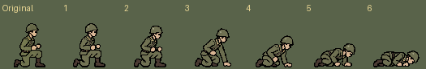

Partizanska i italijanska posada · pad
Svaki postojeći poslužilac dobija šest poza pada iz klečećeg radnog položaja. Partizan zadržava brkove, kapu i svoj predmet za punjenje, a Italijan šlem i prazne ruke. Ovo je zaseban art; pravila igre i zdravlje posada nisu menjani.
Radnja traje 0,84 s, ne ponavlja se i ostaje u poslednjoj nepomičnoj pozi. Dole su oba pada uz precrtani top u merilu igre; top ostaje neoštećen jer njegova olupina nije deo ove predaje.
Širi providni prozor 160×128 px crta se kao 75×60 i čuva isto merilo čoveka kao postojeća posada 60×60. Sidrište je x=80, y=123,52; linija oslonca svakog lika prati njegov prihvaćeni kadar. Prikaz ne uvodi novu logiku pogibije, zvuk ili zasebne živote posada.
Partizanska posada · svi kadrovi u veličini igre

Italijanska posada · svi kadrovi u veličini igre

Završne poze uz topove

Partizanska posada GIF · Italijanska posada GIF · Kadrovi i sidrišta · Izvori i tačni promptovi